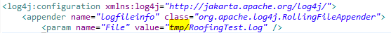

Log files are text documents that record most actions and selections during an application session. Such things like errors, exceptions, or warnings will get documented into the log files. Logs are set up in a way so that they will only record information up to a certain Megabyte of data. Once the max limit file size is met, a new log file is automatically created to further hold the log data.
Currently log4j is our logger we commonly use. Lo4j has a xml or properties config files that is quite flexible. You can set the location where the logs should be saved to and what the log fiile name is as well as how large each log file can be before a new log file is created. If there isn't a log file as named, log4j will automatically create one of you and put it in place within the location the log path is set.
| Landscaping | C:/logs as concreteLandscaping |
| Deck | C:/menards/logs |
| Flooring | c:/menards/logs |
| Roofing | jboss or tc server appLogs |
| Siding | jboss or tc server appLogs |
When a store gets error running roofing, and you need to see the logs, you would access either App1 or App2 server logs due to the load balancer. But you will need to know what store, the time frame and what kind of error it is, as is it estimation or exception errors or mysql errors. Server.log logs everything from all apps, but should be the last thing you want to look at. For roofing, you want to start with main log, Estimator.log, then go to RoofingEst.log, then mysql.log.
Call the store to see what issue it is before you look at logs or do PCAnywhere, if you want it to be faster. Not all things will show up in the log, ex: cosmetic view with computer settings.
There are only 2 server apps 1 and 2 that store nation wide uses. Each store does not have their own web app kiosk server. You will first need permission access from the server admins before you can see beyond the logs folder. Recommented software is Putty or WinSCP, but you can use filezilla as well.
If you see curhist logs, then it has something to do with DBA, so contact them about it
# Root logger option
log4j.rootLogger=DEBUG, stdout, file
# Redirect log messages to console
log4j.appender.stdout=org.apache.log4j.ConsoleAppender
log4j.appender.stdout.Target=System.out
log4j.appender.stdout.layout=org.apache.log4j.PatternLayout
log4j.appender.stdout.layout.ConversionPattern=%d{yyyy-MM-dd HH:mm:ss} %-5p %c{1}:%L - %m%n
# Redirect log messages to a log file, support file rolling.
log4j.appender.file=org.apache.log4j.RollingFileAppender
log4j.appender.file.File=C:\\logs\\learningTest.log
log4j.appender.file.MaxFileSize=5MB
log4j.appender.file.MaxBackupIndex=10
log4j.appender.file.layout=org.apache.log4j.PatternLayout
log4j.appender.file.layout.ConversionPattern=%d{yyyy-MM-dd HH:mm:ss} %-5p %c{1}:%L - %m%n
If you are getting logging file not found errors when running roofing or siding, it is probably beause your log4j properties are not set correctly.
test.dir will give you null in return and throw an error if the variable is not replaced at runtime. The quickest solution would be to use an absolute path and take out the ${}, this path will most likely create the log from your main c: root. Just don't commit the lo4j property changes when you are ready to push to stash.
Another way to use the log, keeping the ${test.dir} as is, is to make sure you call System.setProperty("test.dir","c:\\logs"). This way, the test.dir variable will be set at runtime, in this case, creating a RoofingTest.log under the c:\\logs directory. But you have to set this before you actually init the logger so it can be cumbersome.
The proper way to use the log however, by keeping the ${test.dir} as it is, is when you debug in eclipse, go into the debug configuration and put
-Dtest.dir=c://logs as your vm arguments.